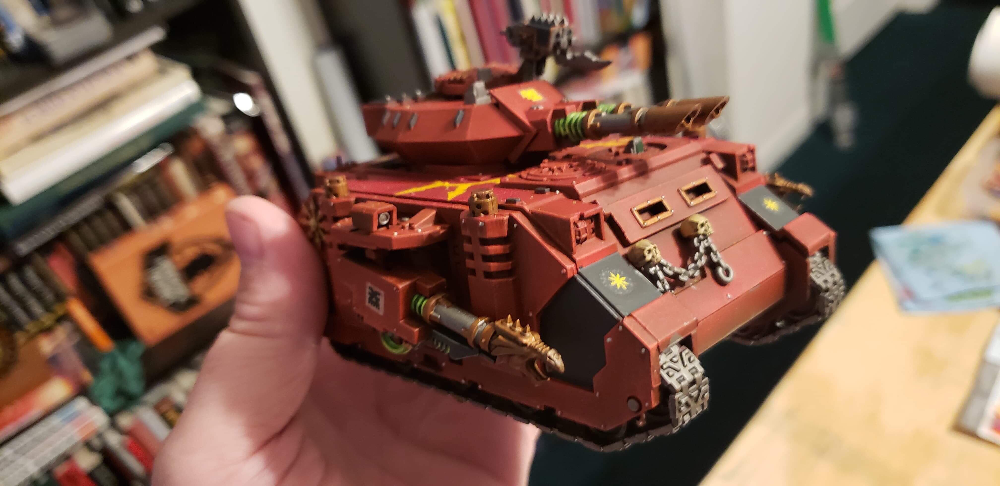
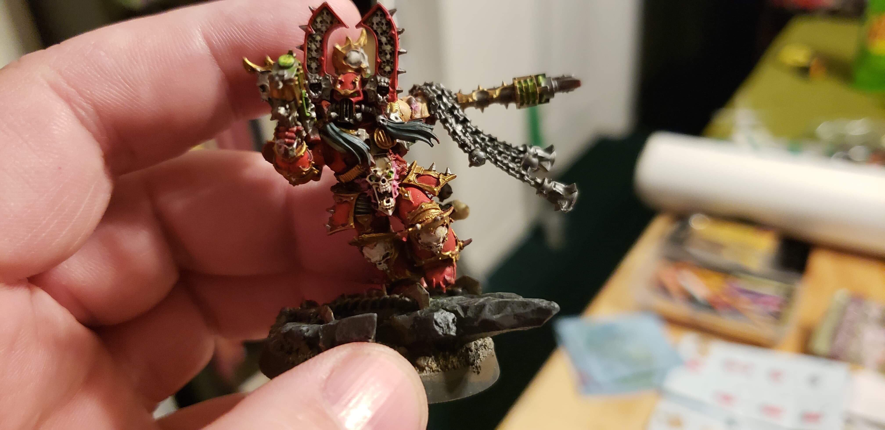
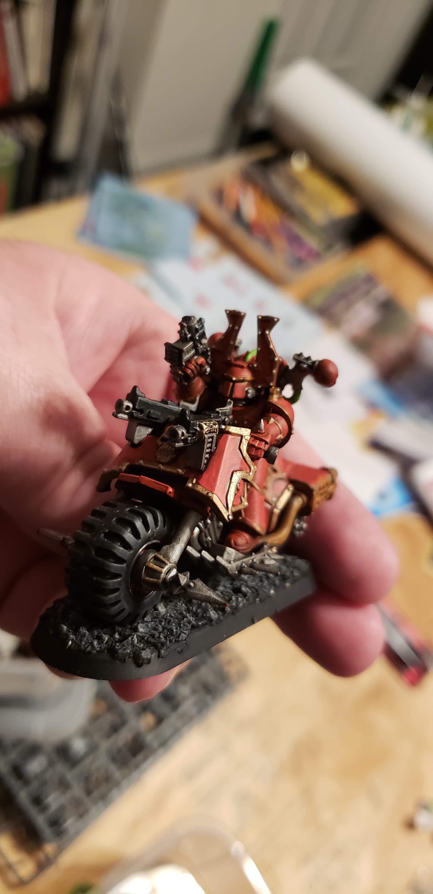
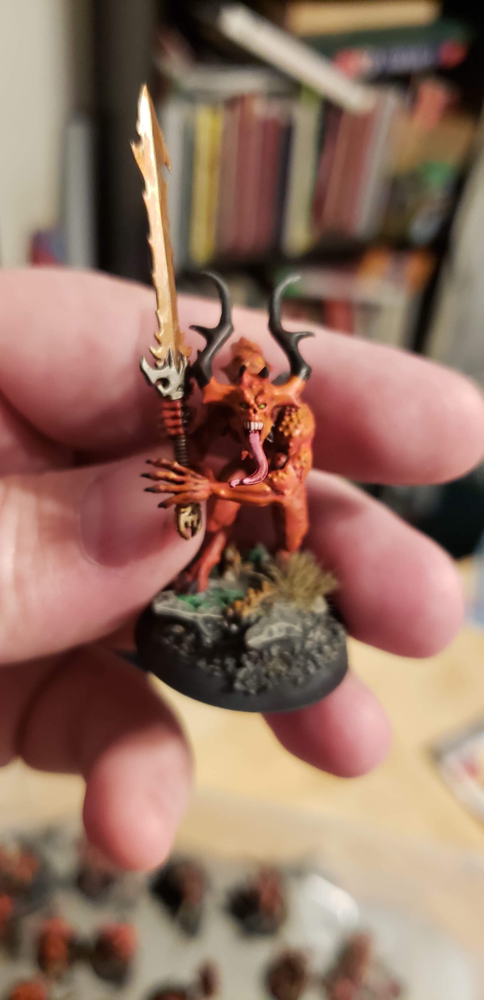

Painting miniatures can be a fun and rewarding hobby. There are several steps to get a model put together and painted for the table or display. I will provide you with a beginners guide to completing a miniature.
The first step in getting many miniatures ready for painting is assembling them. These miniatures will come on a frame often referred to as a sprue. To remove the pieces from the sprue you can use speciality clippers or wire snips. After removing the parts any mold lines and remaining sprue need to be filed off. Once the parts have been trimmed and filed it is a good idea to wash them with warm water and dish soap to remove any chemicals used to help them from there molds. Once the pieces have dried it is time to assemble them according to their instructions using model glue.
Once your miniature is assembled it is time to prepare it for painting. To do this you need to prime the model first. This can be done using either a brush, rattle can, or air brush. When first getting started painting miniatures it is best to use a dark primer since it can help hide spots that you might miss while painting.
Now that the model is assembled and primed it is time to begin painting it. When painting it is best to use several layers of thinned paint instead of one layer of unthinned paint. This allows details on the model to remain clear. Once the model has been painted using washes is a great way to elevate the paint job. washes are thin inks that gather in recessed areas, adding depth to the model. To pick out raised details you can use a technique called drybrushing. Drybrushing is using a stiff bristled brush that most of the paint has been removed from to pick up raised details. After finishing drybrushing it is recommended to seal your model with a varnish to keep the paint from chipping.
By following these instructions and tips it is possible to produce quality painted models with just a little bit of practice. I hope this guide helps you discover a new and enjoyable hobby.